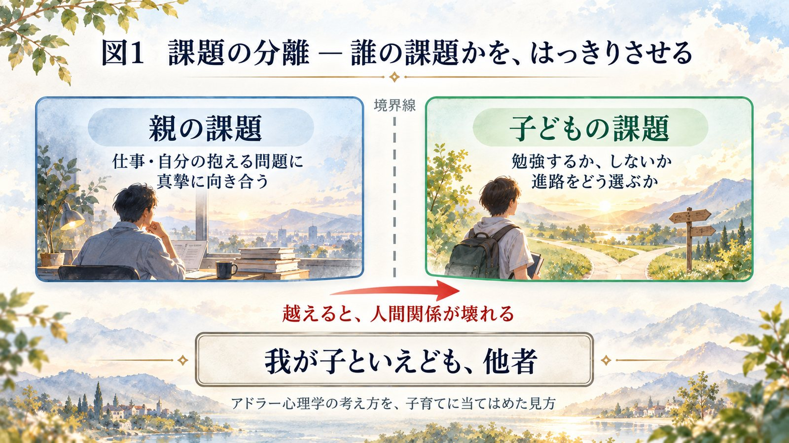
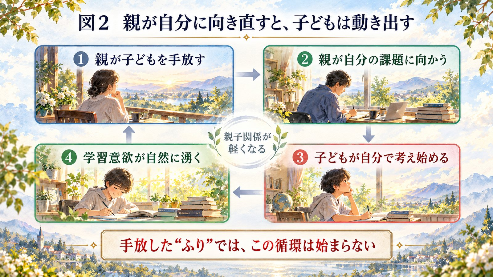

私は40年以上にわたって高校の教師をし、塾を経営し、お子さんも含めて4000人ほどの親御さんと向き合ってきました。2000年代くらいから、物分かりのいい親、子どもに寄り添う姿勢の親が増えてきたと感じます。そのこと自体は、いいことです。
ただ、気になることがあります。その「いい親」が、あまりにも「こうすべき、ああすべき」を子どもに押し付けてはいないか。あるいは、世間の常識的な子育ての方法に、無自覚に従いすぎてはいないか。その結果として、お子さんがむしろ逆の方向へ行ってしまうことが多いのです。だから、今日はこのタイトルでお話しします。
第一部 ── ありがちな「いい親」の例、五つ
§1 ── 良かれと思って先回りする
非常に多いです。失敗を恐れて、子どもが失敗する機会を奪ってしまう。テストが近いのに勉強していない子を見ると、「そんなんでいいの」「もうあと5日しかないわよ」。よかれと思っているのですが、それが子どもの自律性・主体性を奪っています。
§2 ── 正しいことを教えようとする
「正しいこと」は、時代によって変わります。ありがちなのは、学校でいい成績を取り、できるだけいい学校に行き、いい就職先に入ることが人生の幸福だ、という考え方です。けれどAIの時代になり、覚えるだけ、マニュアルに従うだけの人間は、かえって社会から必要とされなくなりかねません。
§3 ── 失敗させないように守る
失敗を恐れることで、チャレンジ精神が失われます。
§4 ── 欠点を直そうとする
塾講師を長くやってきて、親御さんと話すと、算数ができない、英語ができない、だからその教科をできるようにしたい、となる。その気持ちは分かります。けれど ──
欠点と長所は裏表、コインの裏と表なんです。どちらかをなくそうとすると、反対側も消える。
国語が得意なら、国語を伸ばす方向に行ったほうがいい。算数ができないからと無理に算数をやらせると、私の見てきた経験では、どちらも中途半端になるのが通例です。
§5 ── 心配しすぎて不安を抱える
子どもを心配する親御さんは、非常に多い。けれど、ただ心配しているだけでは、何も変化は起こりません。
この五つが「いい親の罠」です。子どもの自立・自主性・主体性・学習意欲を奪う要素になります。
第二部 ── 「いい親」をやめる、とは
「いい親をやめる」とは、放任や放置のことではありません。過剰な介入、過剰な心配、過剰な正しさを手放すということです。
子どもは「完璧な親」ではなく、「安心している親」のもとで伸びます。
親が子どもの前で完璧な親を演じようとしすぎると、どうなるか。親にも人間として欠点や弱点があり、悩みも心配もあるはずなのに、完璧を演じれば演じるほど、子どもは「自分も完璧でなければならない」と考えてしまう。これは非常に窮屈です。
むしろ、我が子を見て「うちの子は大丈夫だ、人間としては大丈夫なんだ」という姿勢を持っている、安心している親のもとで、子どもは伸びる。親は、肩の力を抜いたほうがいい。
§6 ── 「いい親」が子どもを伸ばさない、四つの理由
過干渉は依存を生みます。 親が先回りすることで、子どもは自分で考えなくなる。考えなくなれば、深く考えることもしなくなる。そして失敗を恐れて、自分の考えを言わなくなっていきます。
過度な心配は無気力を生みます。 親の不安は、そのまま子どもに伝わります。「どうせ自分はできない」「信頼されていない」という無力感につながっていく。
正しさの押し付けは主体性を奪います。 本来は、失敗や経験を通じて自分なりの価値観をつくっていくべき時期です。そこに親の価値観を強引に押し込むと、「親に従った人生」になってしまう。これは中年になるまで苦しむことになります。
「良い親を演じる」ことが、子どもを苦しめます。 親が完璧であろうとすると、子どもも「自分も完璧でなくてはならない」となり、チャレンジ精神がなくなってしまいます。
第三部 ── 課題の分離
「いい親」をやめると、まず子どもが自分で考え始めます。親がある程度、子どもの自主性を尊重することで、子どもは自分で考えるしかなくなる。
ただし、自主性の尊重は形だけではダメです。志望校を決めるときに「親があれこれ言っても仕方がない、子どもは子どもの人生を歩むべきだ」とおっしゃる親御さんがいて、立派だなと思う。ところが入試が近づき、成績が伸びないと、急にパニックになって大騒ぎする。
心理学者のアドラーが言うように、子どもの成績や、勉強するかしないかは、親がどうにかする問題ではなく、子どもの課題です。親の課題と子どもの課題は別々である ──「課題の分離」という言葉があります1。他人の課題に介入することで、人間関係は壊れる。我が子といえども、他者です。

「子どもが勉強しなくても放置すればいいんですか。何も言わないと勉強しないんですけど」とおっしゃる方がいますが、順序が逆なんです。
言わなければやらないから言う、ではなく、言われるまで待っているから、言われるまでやらない。
ですから、まったく言わなくなって、親は自分のやるべきことをきちんとやればいい。仕事にしろ、自分の抱えている問題にしろ、真摯に向き合う。すると子どもも、自分のことは自分でやり始めます。これは法則です。
親が自分の課題に一生懸命向き合っていると、学習意欲も自然に湧いてきます。特に試験が近づくと、自分の意思でやり始める。自分の意思と意欲でやらない限り、親に言われて仕方なく机に向かっても、何も頭に入ってきません。
そして、親子関係が軽くなる。親が先回りして心配したり説教したりすると、親子のあいだに重苦しい空気が漂います。そこが軽くなることが大事です。自主性、柔軟性、好奇心、挑戦力、自己肯定感 ── 子どもが本来の力を発揮するのは、そこからです。

第四部 ── 具体的に、何をするか
§7 ── 子どもを“手放す”
私はいつも「子どもを手放しましょう」と言うのですが、なかなか分かっていただけません。手放すとは、放置や無関心ではなく、子どもができることは子どもに任せ、子どもの選択を尊重し、親が決めてしまわないということ。そして、子どもに向かっている注意を、自分に向ける。親は自分のやるべきことをやる。すると不思議なことに、子どもは自分のことをやり出します。
ただし、手放した“ふり”はダメです。ここが難しい。「先生に言われたから言わないようにしているのですが、言わないとますますやらなくなりました」という親御さんがいます。それは、何も言わないようにしながら、心の中では「早くやれよ」と言っている。手放したことには、なっていません。
§8 ── 心配をやめる
心配は、子どものためにも、誰のためにもなりません。
心配するということは、信じていないということ。不信感のメッセージです。
それは潜在意識のレベルで子どもに伝わり、子どもは「自分は信頼されていない」と感じることになります。
§9 ── 欠点より長所を見る
不得意より、得意を伸ばしてあげる。そちらへ誘導してあげることが大事です。
§10 ── 親自身が“学ぶ姿勢”を持つ
ここが、私は一番大事だと思っています。多くの親御さんは、子どもをどうにかしようというコントロール欲求で考えている。それをやめてしまうこと。むしろ親自身が、仕事の上でも人生の上でも、いろんなことを学ぶ。中年期になった親御さんは、もう一度学び直しをする。子どもに勉強しなさいと言うなら、親も勉強してください。 これが私の主張です。
§11 ── 会話を「教える」から「語る」へ
親子の会話を、「あれしなさい、これしなさい」の一方通行にしない。社会問題でも何でも、テーマについて親子で語り合う機会を、自然なかたちで設けてほしい。
以前お話しした三角話法がこれです。子どもの前で夫婦が話をする。テレビを見ながら社会問題について議論する。それが子どもの耳に自然に入るようにする。すると、子どもはその分野に興味を持ちます。
第五部 ── 親への課題
どうしても心配してしまう親御さんは、子どものマイナス点を見ているからです。ですから、子どものプラス点を見てください。
面倒かもしれませんが、子どもの長所を毎日1つでも2つでも、日記やノートに書く。そして1日1回、子どもに愛情を表現する。「学校で何があった？」「部活、頑張ってるよね」。そういう、子どもを励ます一言を、1日1回つくる。
そして ── 子育ての期間は、とても短い。
私には子どもが5人います。小さい頃は「いつになったらこの子育ては終わるんだろう」と、育児に追われて大変でした。けれど終わってみれば、あっという間に成人してしまう。そのときに思うのは、「もう少し、小学生・中学生・高校生の時期に、子育てを楽しんでおけばよかったな」という後悔です。これは、多くの親御さんがすると思います。
ですから、子どもが独立する前に、心配ばかりするのではなく、子育てを楽しんでいただきたい。「いい親」をやめると、親も子も自由になれる。 そして子どもは伸びていく。そういうお話でした。
次回は、小学生の教育について
次回は、この話を踏まえて、小学生の子どもにどんな教育が大事かを、ゲストをお招きしてじっくりお話しします。
ご家庭で試してみてください
この講話を「読んで終わり」にしないために、今日から試せる小さな三つを置いておきます。
1. 子どもの長所を、今日ひとつ書く。
ノートでも、スマホのメモでも構いません。書こうとすると、見る目が自然にプラス側へ向きます。
2. 言いたくなったとき、「これは誰の課題か」と自問する。
勉強するかしないかは、子どもの課題です。言葉を飲み込むのではなく、どちらの課題かを一度考えてみてください。
3. 自分が学んでいる姿を、見せる。
何でも構いません。親が面白がって学んでいる姿は、「勉強しなさい」の百倍の説得力があります。